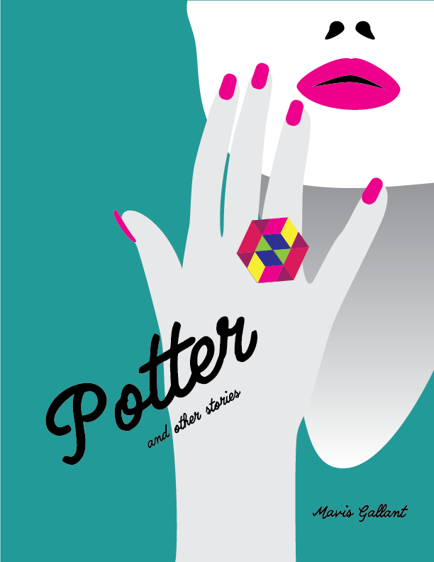
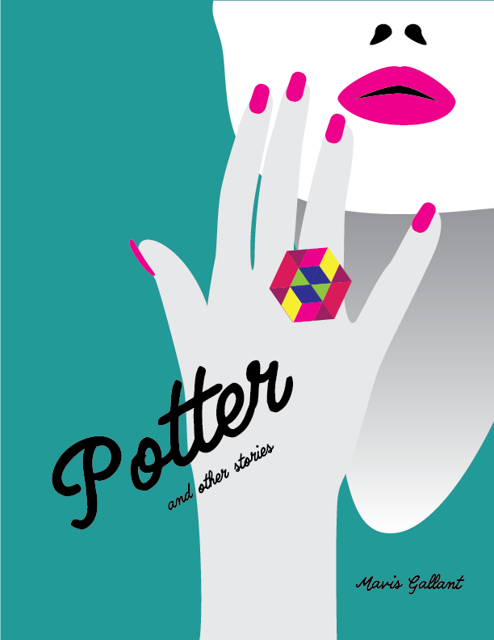

A Study of Visual Metaphor and Universal Conventions
A series of vector illustrations and a photo composite
Vector graphics are becoming increasingly popular in 2018 due to their scalability. The key to successful use of vector graphics is an in-depth practice of Bezier Curves and a mastery of the Pen Tool. To achieve this, I illustrated a series of short story book covers while concurrently studying the parallels between visual and literary metaphor.
 
